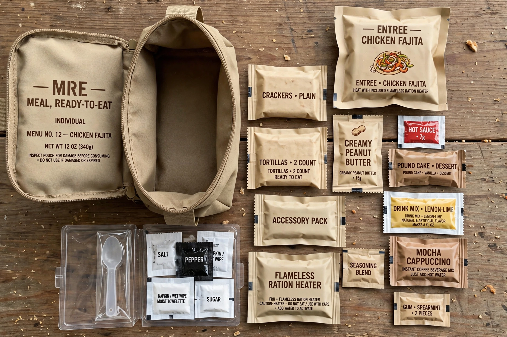

| Type | Field ration |
|---|---|
| Place of origin | United States |
| Introduced | 1981 |
| Energy | ≈1,250 kcal (5,200 kJ) per meal |
| Shelf life | About 3 years at 27 °C (81 °F) |
The Meal, Ready-to-Eat (MRE) is a self-contained individual United States military ration in lightweight packaging. It was adopted in 1981 as the successor to the canned Meal, Combat, Individual (MCI, or "C-rations"). Each MRE provides an average of 1,250 kilocalories and is intended to sustain a service member in field conditions where organized food service is unavailable; up to three per day may be issued for extended operations.

A typical MRE contains a main entrée (such as beef stew, chili with beans, or a vegetarian pasta dish), a side dish, crackers or bread with a spread (cheese, peanut butter, or jam), a dessert, powdered drink mixes, and an accessory pack with items such as salt, sugar, coffee, gum, moist towelette, and toilet paper. Since the 1990s most MREs include a flameless ration heater, a magnesium–iron chemical heating pad activated by water. Menus rotate among 24 varieties, including vegetarian and religious (halal and kosher) options.
The MRE replaced the MCI beginning in 1981 after years of development at the U.S. Army Natick Soldier Research, Development and Engineering Center. Its flexible retort pouches are lighter and less bulky than cans. The ration was used extensively in the Gulf War, and in conflicts in Iraq and Afghanistan. MREs are also distributed in humanitarian aid and disaster relief, and civilian imitations are sold commercially.
Many countries issue analogous individual rations, such as the British ORP (Operational Ration Pack), the French RCIR, the Canadian IMP, and the Australian CR1M. U.S. troops also joke about the acronym, calling MREs "Meals Rejected by Everyone" or "Meals Refusing to Exit", even though taste and variety have steadily improved.